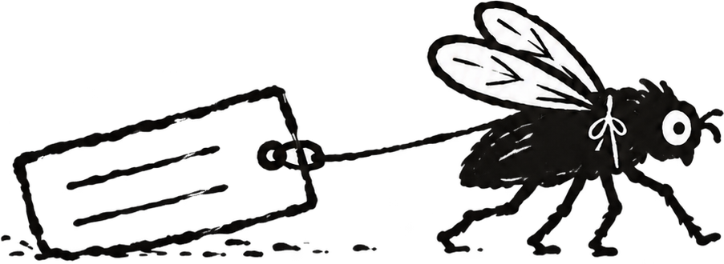

01Available
EntoLabel
Create clean collection and determination labels from Excel or CSV, ready to print on A4.
Open EntoLabelENTOKIT / OPEN-SOURCE ENTOMOLOGY TOOLS
From the first field note to the final specimen label: practical, open tools for people who care about insects and their data.
built around specimens, not platforms

THE TOOL DRAWER
Start with the problem in front of you. The same familiar files can carry the work from the field to the collection drawer.
Create clean collection and determination labels from Excel or CSV, ready to print on A4.
Open EntoLabelRecord collecting events, localities and specimens in the field—even from your phone.
Try EntoFieldFind missing values, inconsistent formats and coordinates that need attention.
Try EntoData DoctorOrganize specimen boxes visually, track storage locations and find specimens across your collection.
Try EntoBoxDocument identifications, evidence and determination history without losing context.
On the roadmapEntoField, EntoData Doctor and EntoBox are working prototypes. Real specimens and honest feedback are very welcome.
ONE DATASET / FIVE STOPS
Collecting events, context, GPS and photographs.
Check formats and make every record reusable.
Keep names, evidence and determinations connected.
Turn structured data into accurate physical labels.
Keep specimens findable in boxes and storage.
capture once · stop retyping
SMALL BY DESIGN
EntoKit is a growing collection of focused tools for field entomologists, students, private collectors and small scientific collections. Familiar files stay at the centre, so your data remains understandable, portable and yours.
USE IT / TEST IT / HELP IT GROW
EntoKit is created and maintained by Sanny. It is still young, so you are warmly invited to try the tools with real specimen data, report the awkward bits and help shape what comes next.
View source on GitHub